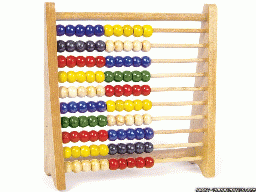
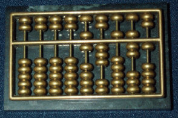
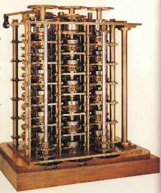
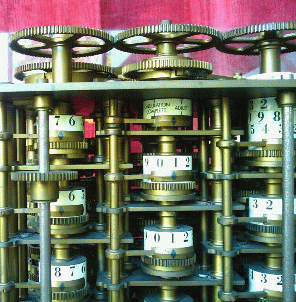
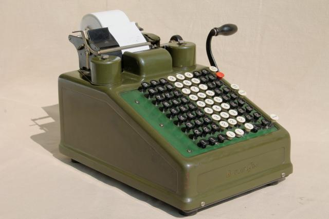

Etymology of the word
"computer"
Origin
of the word Computer:
What is a
"computer"
Computer:
- A computer is a
"reckoning"
or computing
machine !!!
- In fact: a
computer
is an programmable
computing device
(that helps humans do their chores)
|
I.e.: a
computer can
only
perform
computing (= calculating)
operations !!!
Why was the
computer invented ?
Precursors inventions to
the computer:
- Humans had
invented
computing devices
in ancient times.
- During the industrial revolution,
programmable machines
were invented
|
The computer is
in fact a
combination of these
2 inventions
The computer was
invented by
Alan Turing during
World War II to help him
break the
German's
Enigma Code:
Computing machines invented by humans -
ancient times
|
Toy abacus
|
Chinese abacus
|
|

|

|
- # beads in row 1 = unit value
- # beads in row 2 = 10's value
- # beads in row 3 = 100's value
- And so on
|
- # beads in column 1 = unit value
- # beads in column 2 = 10's value
- # beads in column 3 = 100's value
- And so on
- 1 bead in upper half = 5 beads in lower half
- Value represented by abacus = 63571
|
Computing machines invented by humans -
Renaissance period
|
Babbage's difference engine
|
Close-up of the mechanics
|
|

|

|
True history: I have used one of these
mechanical calculators
in my Dad's grocery store

❮
❯